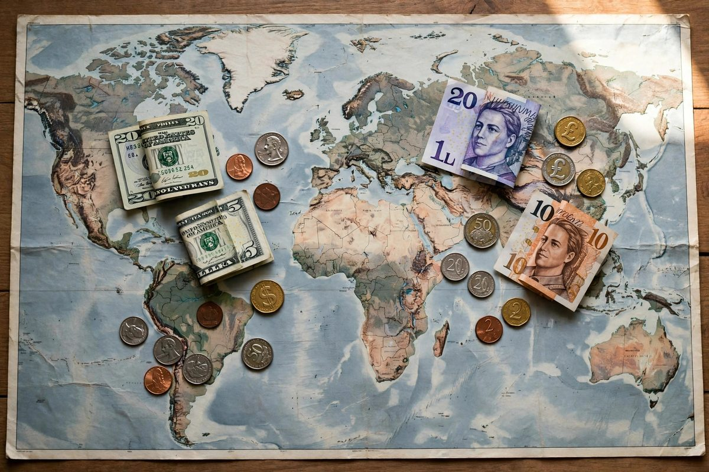

USD to GBP: Converting Dollars to Pounds in 2026

The dollar-pound rate
The dollar to pound rate is driven by the gap between US and UK interest rates, by inflation on both sides of the Atlantic, and by global risk sentiment. When investors feel nervous, they often buy dollars as a safe haven, pushing the pound down, and when confidence returns, the pound tends to recover. In recent years the pair has traded roughly between 0.74 and 0.85 pounds per dollar, a wide range that makes the timing of a large conversion worth thinking about.
For travellers, the rate on a given day matters less than the provider's margin. A three percent bank spread on a 2,000 dollar trip costs 60 dollars, which is more than most daily rate moves. Check the live mid-market rate on our converter, then compare providers on the total pounds you receive, not on the advertised fee.
Cheapest ways to convert USD to GBP
For transfers, online specialist services are usually cheapest, with total costs under one percent for major amounts and delivery within one to two days. They publish their rate and fee openly, which makes comparison easy. US banks typically charge three to five percent in total for an international wire, and they often add a fixed wire fee of 25 to 45 dollars on top, which makes them especially expensive for smaller amounts.
For spending in the UK, a fee-free US debit or credit card is the best option, converting at close to the mid-market rate with no foreign transaction fee. Pay in pounds at every till and ATM, and decline any offer to pay in dollars. Withdrawing pounds from a UK ATM is also reasonable, though some US banks charge a foreign ATM fee, so check yours before travelling and consider a travel-friendly account if the fees are high.
Planning a large conversion
For a large sum, such as a tuition payment, a property purchase, or a relocation, the rate deserves more attention. Watch the rate for a few weeks before you need the money, and set a target rate with your provider if it offers alerts or limit orders. Splitting a very large conversion into two or three parts over several weeks reduces the risk of converting everything on a bad day, though it also means you may miss a good day.
Never convert money you do not need to move, and never borrow to speculate on the exchange rate. Currency markets are unpredictable, and even professional traders get them wrong. The goal for a large conversion is a fair rate with low costs, not a perfect rate, and a good provider with transparent pricing is worth more than a lucky guess about the market.
Putting It Into Practice
For your next trip to the UK, check your card's foreign transaction fee before you go, and switch to a fee-free card if yours charges one. On arrival, pay in pounds everywhere and decline any offer to pay in dollars, and withdraw cash from a bank ATM rather than a bureau. If you need to send a larger sum, compare two specialist providers against the mid-market rate first; the saving on a single large transfer often pays for a day of the trip.
Frequently Asked Questions
How many pounds do I get for 100 dollars?
At 0.79 pounds per dollar, about 79 pounds at the mid-market rate, less after any spread or fee.
What is the cheapest way to convert USD to GBP?
An online specialist service for transfers, or a fee-free card for spending. Avoid bank wires and airport bureaus.
Do US banks charge for international wires?
Yes, typically 25 to 45 dollars per wire plus a spread of two to four percent on the rate.